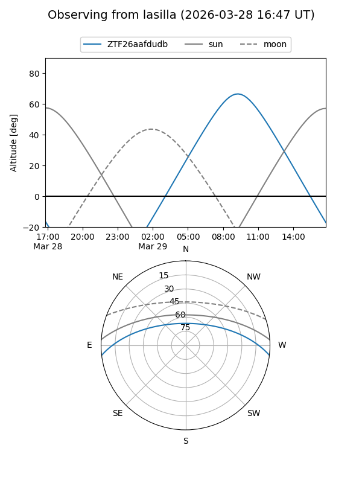
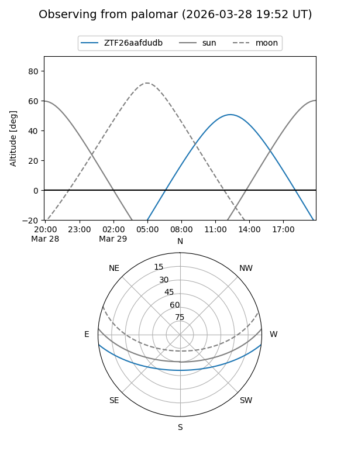
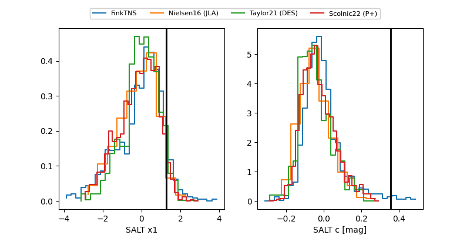

ZTF26aafdudb
Target ZTF26aafdudb at 2026-03-28 14:05
Aliases and brokers:
FINK: link
Lasair: link
ALeRCE: link
alt names
ZTF26aafdudb (ztf,fink_ztf)
Coordinates:
equatorial (ra, dec) = 254.6781,-5.84028
equatorial (HMS+DMS) = 16:58:42.76,-05:50:25.01
galactic (l, b) = (13.7654,+21.82225)
Flags:
likely cv
Photometry:
last ztfg=16.49, ztfr=15.70
2 ztfg, 1 ztfr detections
Lightcurve
Visibility


Additional plots
